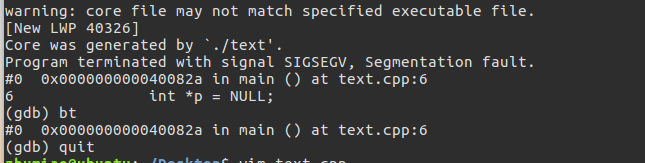

- 关于core文件的设置
两种方式设置core文件名，默认系统是生成名为core的文件，但是当我们为了方便调试，需要生成带pid，time等信息的core文件时候，就需要自己设置一下了。以下命令一般都要root权限。
1 | echo "1" > /proc/sys/kernel/core_uses_pid |
如果以上命令执行无权限，可以使用下列命令
1 | sysctl -w kernel.core_uses_pid=1 |
都是一个意思，设置core文件名带进程id。另外我们也可以修改core文件统一生成到一个自定义默认路径，比如：“/corefile”更详细可以参考下面说明：
1 | #执行如下命令的一条即可 |
%p - insert pid into filename 添加pid(进程id)
%u - insert current uid into filename 添加当前uid(用户id)
%g - insert current gid into filename 添加当前gid(用户组id)
%s - insert signal that caused the coredump into the filename 添加导致产生core的信号
%t - insert UNIX time that the coredump occurred into filename 添加core文件生成时的unix时间
%h - insert hostname where the coredump happened into filename 添加主机名
%e - insert coredumping executable name into filename 添加导致产生core的命令名
在终端使用命令
1
ulimit -c
查看你当前终端是否打开了core dump。系统一半默认输出0，此时我们需要设置一下
1
ulimit -c unlimited
将终端设置成无限dump文件大小。也可以设置成一个值比如1000，dump文件超过1000字节就不会继续生成。所以通常使用无限制大小。
编写测试demo,text.cpp文件
1
2
3
4
5
6
7
8
9
using namespace std;
int main()
{
int *p = NULL;
*p = 5;
cout<<*p<<endl;
return 0;
}g++ -o text text.cpp，生成text可执行文件，然后运行，就会得到core.*文件了。gdb调试
当我们发布程序后，拿到core文件了，怎么调试？答案就是gdb。
使用源代码，如果是用makefile的话也一样，编译的时候加 -g 参数
1 | #编译 |
此时我们就会发现输出信息很直观了，如下图。
